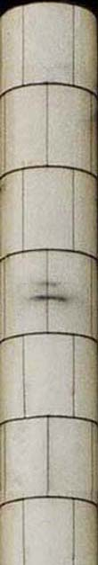

Ya no hay acto ni acontecimiento que no se refracte en una imagen técnica o sobre una pantalla, ni una acción que no desee ser fotografiada, filmada, grabada, que no desee confluir en esta memoria y volverse en ella eternamente reproducible
